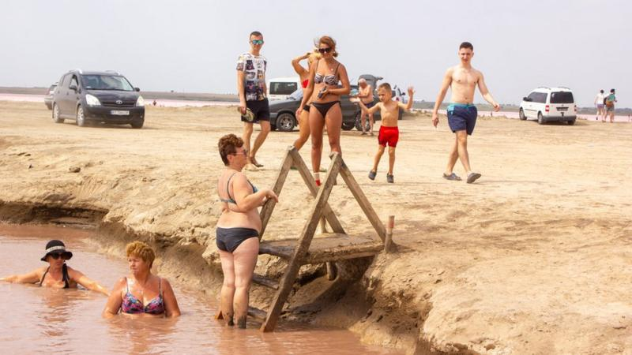
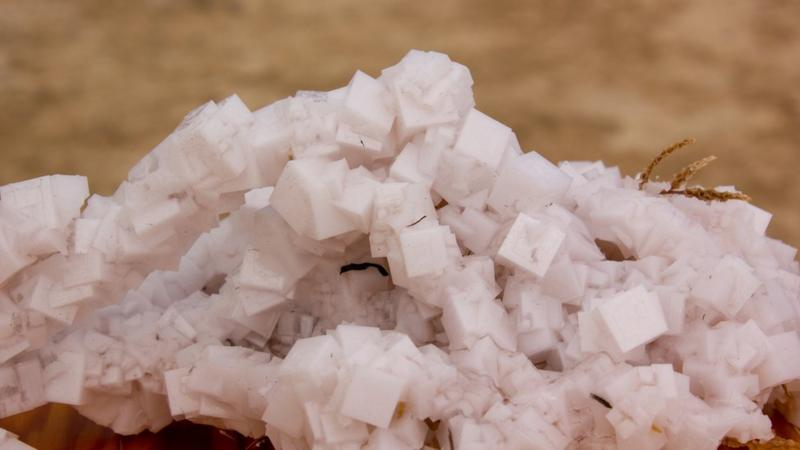
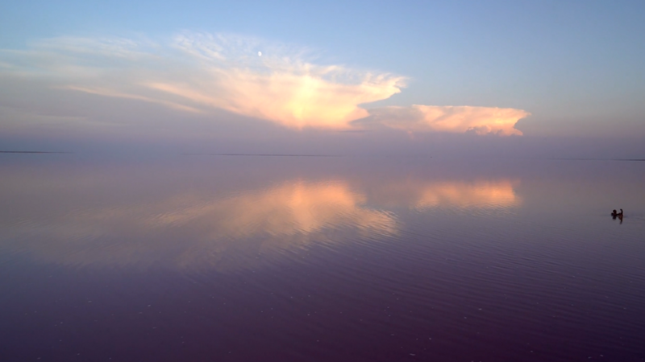
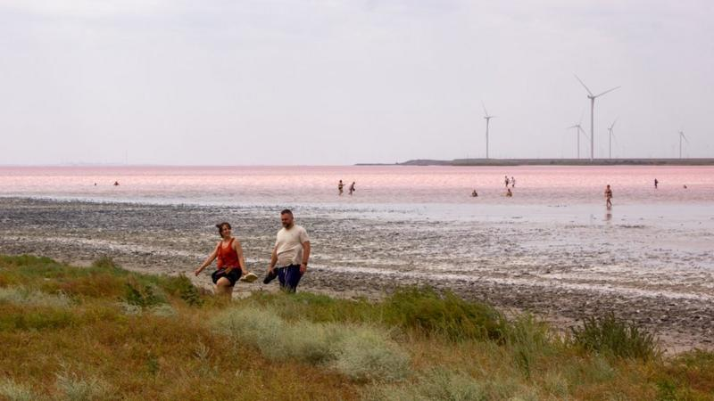

Зазвичай на Херсонщину приїздять, щоб відвідати морські курорти, а потік туристів у цей регіон восени зменшується.
Проте тут є що побачити та де відпочити і в оксамитовий сезон. Одне з таких місць - рожеве озеро Сиваш, розташоване майже на межі з Кримом.- Загадка серед поля. Звідки на Херсонщині взявся Хабловський маяк
- Куди поїхати? Подорожі Україною від редакції ВВС
Подивитись на нього найкраще у селах Присиваської територіальної громади Каховського району.
Яскраво-рожевого кольору воно буває тільки за сонячної погоди, але і в інші дні воно може виглядати не менш захопливо.
Розповідаємо, чим саме вас може вразити ця туристична локація.
Озеро, яке постійно змінює колір
За лікувальними властивостями та солоністю води Сиваш часто порівнюють з Мертвим морем в Ізраїлі. Але є особливість, завдяки якій українська перлина виграє в ізраїльської, - це казковий та неповторний колір води.
Часто Сиваш називають "гнилим морем" через специфічний запах сірководню, який можна відчути у безвітряну погоду.
Насправді Сиваш - це не озеро, а західна протока Азовського моря. У ньому живе Dunaliella salina - одноклітинна водорість, яка і надає воді рожевого забарвлення.
Але для того, щоб озеро стало яскраво-рожевим, потрібні особливі погодні умови, і це не тільки сонячна погода, каже місцевий екскурсовод Єгор Сидорович.
"Колір залежить від припливів та відпливів, швидкості вітру, хмарності, температури тощо. Аналогів в Європі йому не існує", - наполягає він.
Колір води не впливає на цілющі властивості. Але перед тим, як купатись у ньому, екскурсовод радить отримати рекомендації від лікаря.
А ще застерігає, що у спробах зробити гарне фото не варто забувати про власну безпеку та не ходити по засоленій частині озера без взуття. Адже можна порізати ноги кристалами солі, які бувають дуже гострими.
В час, коли озеро не рожеве, тут також гарно. Ближче до заходу сонця блакиті води та неба зливаються. Тоді горизонту не видно, а водна гладь стає дзеркалом, у якому відбиваються хмари.
Аби побачити всю красу Сиваша, екскурсовод радить їхати на Іванівську косу, поблизу села Іванівка (нині це Каховський район).
Влітку сюди приїздять чимало туристів побачити саме рожевий колір води. Восени тут менше людей. Такий відпочинок підійде для тих, хто шукає усамітнення.
Лемурійське озеро та збитий літак
Ще одна локація з цілющою рожевою водою - це так зване Лемурійське озеро.
Від Іванівської коси до Лемурійського озера 17 кілометрів. Найближче
поселення до цієї водойми - село Григорівка.
Жодного стосунку до
лемурів озеро не має - так його почали називати місцеві, аби привабити
туристів.
Жителі навколишніх сіл називають його "ямою". Єгор Сидорович розповідає, що у середині 1960-х під час військових навчань туди впав літак.
"Пілот розумів, що влетить прямо в Армянськ, і відвів літак у бік, катапультувався, але, на жаль, загинув. На місці падіння утворилася яма, яка почала заповнюватися водою з Сиваша", - розповів пан Сидорович.
Після аварії розбитий літак дістали, але місцеві кажуть, що іноді і досі знаходять його уламки. Тоді рятувальники суттєво поглибили вирву і її заповнила вода.
Лемурійське озеро саме по собі не надто велике - десь 20 метрів у діаметрі.
Рожеві озера - це відкриття сучасної України
Активно відпочивати на рожевих озерах почали на початку двохтисячних років. Нині кількість туристів збільшується щороку, розповідає краєзнавець.
"Минулого року на понад 4 тисячі населення Сиваської громади вони прийняли 12 тисяч туристів. Це колосально!", - дивується екскурсовод.
Голова Присиваської територіальної громади Сергій Кліщевський каже, що придбати житло в селах, які розташовані поблизу Сиваша, неможливо.
Місцеві зрозуміли, що живуть на туристично привабливій території, тож надають власне житло в оренду туристам в Іванівці.
В селі Григорівка є невеликий готель та приватні садиби. Найголовніша місцева архітектурна пам'ятка - діючий костел кінця ХІХ століття. Вхід на територію вільний, всередину можна потрапити під час недільної служби.
З Херсона сюди кілька разів на день їздить автобус - до Іванівки через Григорівку. Час у дорозі займає трохи більше години.
Якщо ви плануєте відпочинок на кілька днів, то через віддаленість Лемурійського озера та Іванівської коси від сіл сюди найзручніше приїздити на власній автівці. Для одноденної подорожі підійде і групова екскурсія.